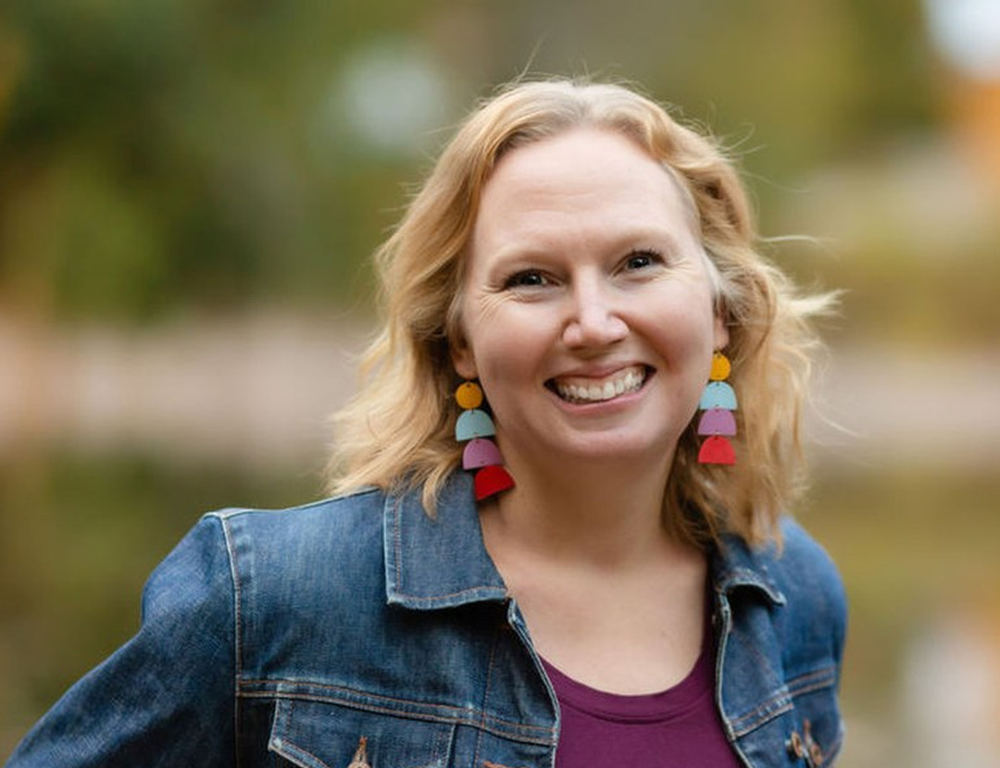

Free to be Faithful
Institute for Christian Studies
Tuesdays · Six weeks · Online
“
Broken
Hallelujah”
Faith, deconstruction, and spirituality through music
Angela Reitsma Bick
Author of
Blessed Are the Undone
· Former editor-in-chief,
Christian Courier
Now enrolling · Nov 3 – Dec 8, 2026